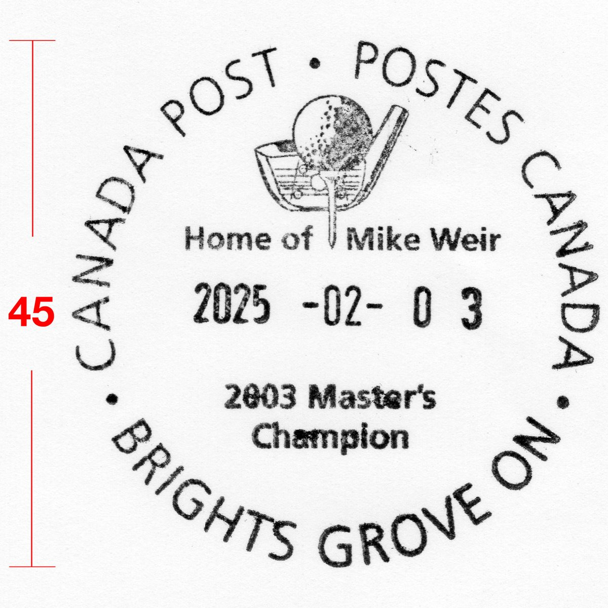

Bright's Grove PO pictorial cancel
Home of Mike Weir – 2003 Master's Champion
- Status
- Active
- Run dates
- 2017-01-01 to 2028-12-31
- Design
- "Home of Mike Weir / 2003 Master's Champion"; golf ball, golfer
- Ink colour
- Black
- Designer
- Unknown
- Post office
- Bright's Grove PO
6533 Waterworks Rd
Bright's Grove, ON
N0N 1C0 - Subjects
- sport, golf, people, hometown, athlete
Collect it by mail. Send your stamped covers, with a stamped return envelope, to the post office address above. How to collect pictorial cancels by mail · en français
 London STN BRCLogo
London STN BRCLogo Thorndale POPRICKLY VALLEY Train Festival
Thorndale POPRICKLY VALLEY Train Festival Stratford Main POBird
Stratford Main POBird